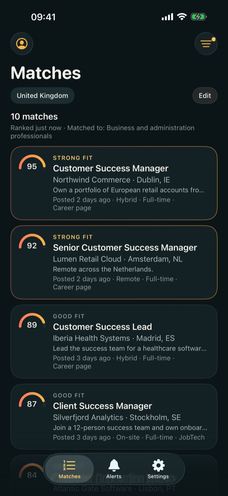
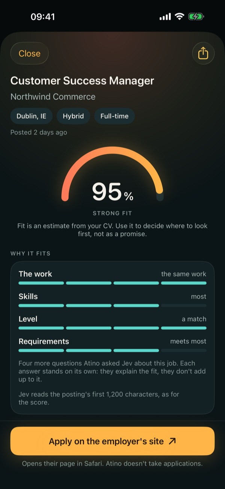
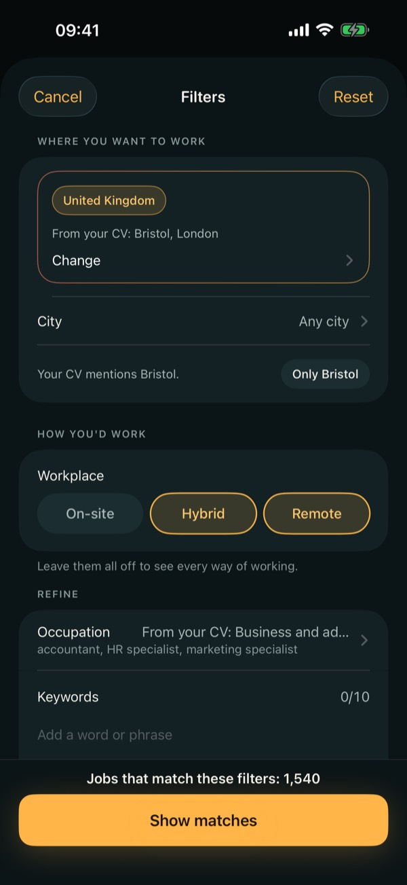

Seize Apps · iOS
Atino
Atino lit ton CV sur ton iPhone, retire ton nom et tes coordonnées et, avec ta permission, demande à un modèle d’IA de noter chaque offre à partir de ce qui reste. Environ 60 000 offres en cours, issues de pages carrières d’entreprises et de données ouvertes de l’emploi, sont livrées avec l’app et mises à jour chaque jour. Chaque résultat affiche un pourcentage de correspondance et un motif bref ; le pourcentage est une estimation, pas une promesse, et le bouton pour postuler t’emmène sur la page de l’employeur.



Ce qu’elle fait
Une seule chose, bien faite.
Ton CV reste à toi
Importe un PDF ; les scans fonctionnent aussi. Atino retire sur le téléphone ton nom, ton e-mail, ton téléphone, ton adresse, ta date de naissance et ton numéro d’identité, puis te montre le texte exact qu’il enverrait. Tu peux le modifier, et rien n’est envoyé tant que tu ne l’autorises pas.
La meilleure correspondance d’abord
Choisis où et comment tu veux travailler, puis lance la recherche. Les offres reviennent classées, chacune avec son pourcentage et le détail du travail, des compétences, du niveau et des exigences. Une recherche par jour et tes 10 meilleurs résultats sont gratuits.
Pro continue de chercher pour toi
Atino Pro ajoute tous les résultats, tous les filtres, les recherches enregistrées et autant de recherches que nécessaire dans la limite d’un usage raisonnable, plus une alerte par jour, à l’heure que tu choisis, quand une recherche enregistrée a du nouveau.
Confidentialité
À toi, pas à nous.
Ton CV, tes résultats et tes recherches enregistrées restent sur ton iPhone. Avec ta permission, le texte expurgé du CV passe par le relais de Seize jusqu’à Command Code et TypeSafe AI (Jev) pour classer les offres ; ils peuvent le conserver selon leurs propres conditions. Sans compte, sans mesure d’audience, sans suivi. Atino a sa propre politique de confidentialité.
Une app de Seize Apps.